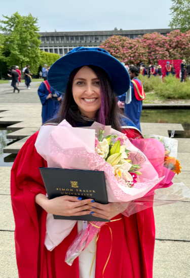
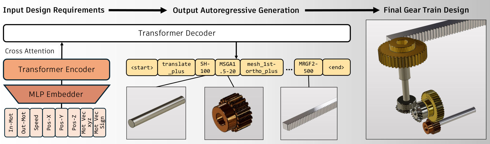

I am currently a postdoctoral researcher at Rosie Lab at Simon Fraser University, where I work on multimodal reaction generation—combining multiple data modalities to produce emotionally and contextually aware outputs.
I recently earned my Ph.D. in Computer Science from Simon Fraser University, where I also conducted my doctoral research at Rosie Lab under the supervision of Prof. Angelica Lim. My thesis explored environmental and emotional awareness using vision-language models.
I have hands-on experience with large language models (LLMs), large vision-language models, and traditional approaches in natural language processing (NLP) and computer vision.
2019-2025, Rosie Lab, Supervisor: Angelica Lim
My Ph.D. thesis aims to push forward capabilities of AI agents to understand their environment (environmental awareness) as well as comprehend human emotions (emotional awareness), towards improved cognitive and emotional intelligence. Vision-Language Models (VLMs) serve as the foundation for this research, providing the means to process and understand both visual and textual inputs. Environmental awareness is the first focus of this work. For example, imagine someone misplacing their keys and asking a home robot for assistance. To respond effectively, the robot must understand and reason about its surroundings. To address this need, this thesis introduces 3D Visual Question Answering (3DVQA) to enable agents to comprehend their environment and answer questions such as "Where are the keys?". The second focus is emotional awareness, which allows AI agents to infer human emotions. Consider a scenario where someone is upset and prefers not to be disturbed. In such a situation, it is essential for the agent to recognize the person's apparent emotional state and adapt its behavior accordingly. This research utilizes large Vision-Language Models to identify apparent emotions in humans, enabling AI agents to exhibit empathy and sensitivity in their interactions. By integrating these two forms of awareness, the thesis aims to contribute to the development of AI systems capable of engaging in more intelligent, context-sensitive, and emotionally aware interactions, thereby enhancing their utility and acceptance in everyday life.
Thesis
AIII 2025, Autodesk Research, Manager: Hyunmin Cheong

Generative AI has made remarkable progress in addressing various design challenges. One prominent area where generative AI could bring significant value is in engineering design. In particular, selecting an optimal set of components and their interfaces to create a mechanical system that meets design requirements is one of the most challenging and time-consuming tasks for engineers. This configuration design task is inherently challenging due to its categorical nature, multiple design requirements a solution must satisfy, and the reliance on physics simulations for evaluating potential solutions. These characteristics entail solving a combinatorial optimization problem with multiple constraints involving black-box functions. To address this challenge, we propose a deep generative model to predict the optimal combination of components and interfaces for a given design problem. To demonstrate our approach, we solve a gear train synthesis problem by first creating a synthetic dataset using a domain-specific language, a parts catalogue, and a physics simulator. We then train a Transformer-based model using this dataset, named GearFormer, which can not only generate quality solutions on its own, but also augment traditional search methods such as an evolutionary algorithm and Monte Carlo tree search. We show that GearFormer outperforms such search methods on their own in terms of satisfying the specified design requirements with orders of magnitude faster generation time. Additionally, we showcase the benefit of hybrid methods that leverage both GearFormer and search methods, which further improve the quality of the solutions.
Paper |
Website |
GitHub
IROS 2024, ACII 2024
How does the person in the bounding box feel?" Achieving human-level recognition of the apparent emotion of a person in real world situations remains an unsolved task in computer vision. Facial expressions are not enough: body pose, contextual knowledge, and commonsense reasoning all contribute to how humans perform this emotional theory of mind task. In this paper, we examine two major approaches enabled by recent large vision language models: 1) image captioning followed by a language-only LLM, and 2) vision language models, under zero-shot and fine-tuned setups. We evaluate the methods on the Emotions in Context (EMOTIC) dataset and demonstrate that a vision language model, fine-tuned even on a small dataset, can significantly outperform traditional baselines. The results of this work aim to help robots and agents perform emotionally sensitive decision-making and interaction in the future.
IROS Paper |
ACII Paper |
Website |
GitHub
CRV 2022
Visual Question Answering (VQA) is a widely studied problem in computer vision and natural language processing. However, current approaches to VQA have been investigated primarily in the 2D image domain. We study VQA in the 3D domain, with our input being point clouds of real-world 3D scenes, instead of 2D images. We believe that this 3D data modality provide richer spatial relation information that is of interest in the VQA task. In this paper, we introduce the 3DVQA-ScanNet dataset, the first VQA dataset in 3D, and we investigate the performance of a spectrum of baseline approaches on the 3D VQA task.
Paper 2 |
Website |
GitHub
Neural Radiance Fields (NeRF) have shown impressive results in novel view synthesis but remain limited in their applicability to real-world scenarios due to constraints such as high computational cost and dependency on accurate camera calibration. To address these challenges, I investigated how to enhance NeRF-based models for more practical deployment. I explored state-of-the-art advancements in the field and proposed a new model by integrating Direct Voxel Grid Optimization, which significantly reduces NeRF’s time complexity, with NeRF--, a variant that eliminates the need for known camera parameters. By combining these complementary methods, we developed a hybrid approach that is both fast and adaptable to in-the-wild datasets.
Retrieval-based question answering (QA) systems have gained traction for their ability to deliver high-accuracy responses by leveraging external knowledge sources. During a 2021 research internship at LG, I contributed to a project aimed at enabling intelligent, retrieval-augmented interactions with LG product catalogues. While the position was research-oriented, I adapted to the team’s immediate needs by focusing heavily on production-ready implementation. After surveying state-of-the-art methods in retrieval-augmented QA, I selected the Retrieval-Augmented Generation (RAG) framework for its strong performance and modularity. I then developed a proof-of-concept system that integrated RAG into LG’s catalogue data pipelines. The prototype was built using a production stack that included Python, Docker, Nginx, Gunicorn, Redis, Redis Queue, PostgreSQL, and Kubernetes. This system demonstrated the feasibility of applying advanced QA models in real-world enterprise contexts, enabling more intelligent and scalable information access across LG’s product ecosystem.
You can reach me at yetesam@sfu.ca
Or connect on LinkedIn